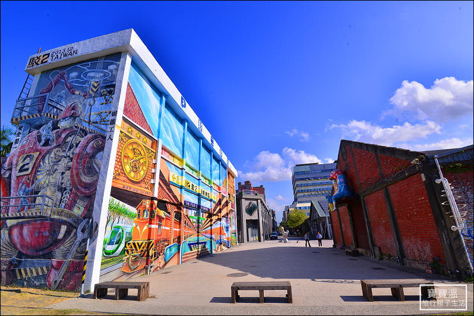
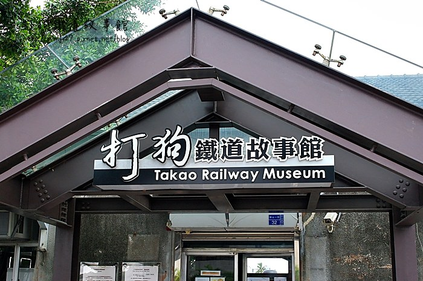

第一個景點-西子灣
打狗鐵道故事館
直接搭高雄捷運橘線來到西子灣站，出來就是打狗鐵道故事館和駁二藝術特區，而且走路到旗津渡輪站約10分鐘，旁邊還有接駁公車可以前往打狗英國領事館，光是這一帶的高雄景點就很豐富。
高雄的打狗鐵道故事館大片的草地很舒服，幾部已經功成身退的老火車頭停放在這裡，成了小男生最愛的高雄景點，靠近駁二倉庫的方向還放著許多大型裝置藝術，是遊客們拍照的好地方。
假日傍晚時分靠近這裡，還會有很多爸比媽咪帶著小傢伙來這裡放風箏。

駁二
高雄駁二原本是塵封許久的老倉庫群，如今凝聚藝術的力量重生，成了超級熱門的高雄旅遊景點。
園區不定會期舉辦的各種展覽，繽紛又充滿創意的各種裝置藝術也會輪流在此呈現，就連五月天演唱會中的大黃蜂也在這裡，花上一整天在這裡逛展、拍照、看書、喝咖啡也是很棒的玩法吧！
需要規劃住宿的話，城市商旅駁二館（查房價）就在旁邊，超棒的高樓景觀很值得推薦唷！

連到第2頁
連到第3頁
連到第4頁
連到第5頁
連到第6頁